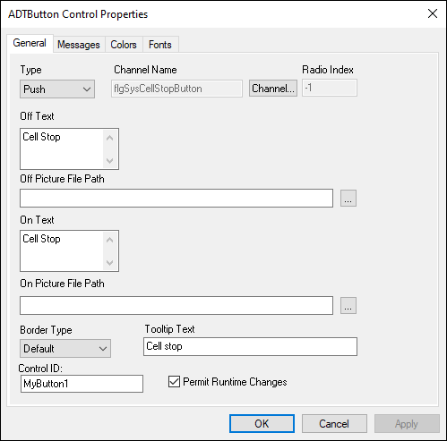

iTest User's Guide
You can use VCL to change the appearance and behavior of iTest Console displays at runtime. This can provide you with a method of interacting with the operator and responding to changes being made in the environment and the GUI. All interaction with a display requires three elements:
Commands to change display objects are sent in the form of a mailslot message with the destination address being the name of the display to change. The actual command is called $SETITEMPROPERTY and the syntax is:
MESSAGE "\\.\mailslot\displayname>>$SETITEMPROPERTY control-id property new-value"
For example, this VCL command would change the OnText property on the button with the ID of "MyButton1" on the "MyDisplay1" display:
MESSAGE "\\.\mailslot\MyDisplay1>>$SETITEMPROPERTY MyButton1 OnText New Text"
Note that these messages can be sent from VCL as the example above shows or from any other location that supports sending mailslot messages, such as other push buttons, picklists, etc.
To enable the $SETITEMPROPERTY command to work, it is necessary to give each display object that you want to automate a unique ID. To do this on the display objects that support automation, open the properties for that object and enter the unique ID in the Control ID field as shown here for ADTButton:
ADTButton Control Properties

For a complete reference of the iTest display objects and the properties that can be set with these messages, refer to the Properties for ADT Display Controls documentation.